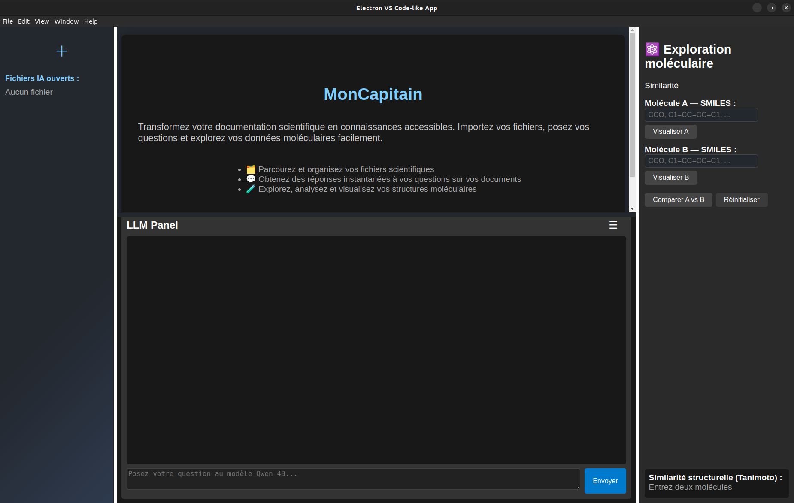
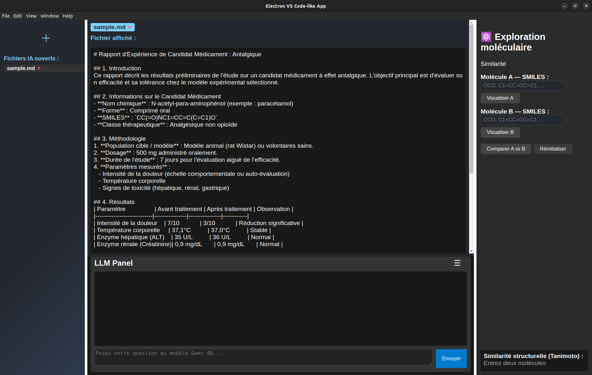
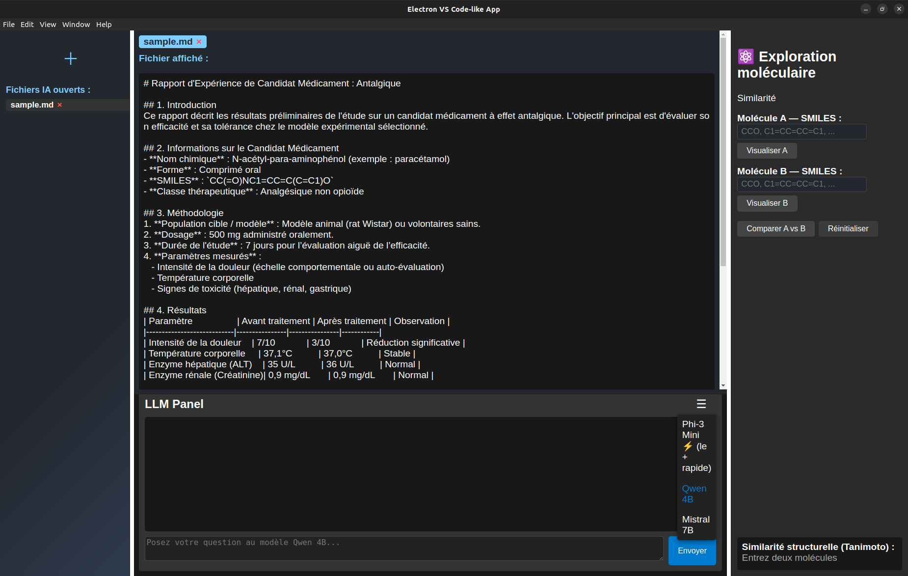
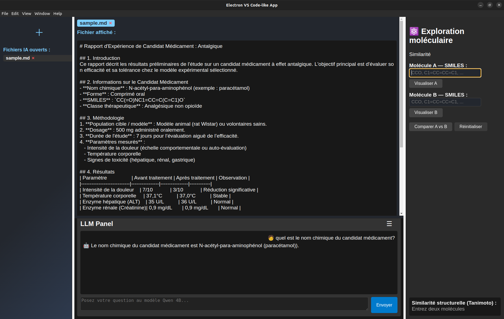
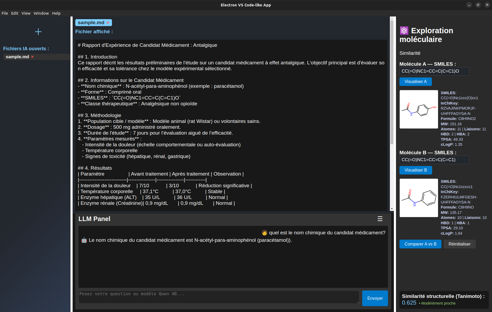

MonCapitain — IA locale pour corpus documentaires scientifiques¶
Projet en cours de développement — code source disponible prochainement.
Le problème¶
Dans un contexte de recherche scientifique, les documents internes (rapports, articles, fiches techniques) s'accumulent et deviennent difficiles à interroger efficacement. Les solutions cloud posent des problèmes de confidentialité sur des données sensibles.
La solution¶
MonCapitain est un système RAG (Retrieval-Augmented Generation) 100% local — aucune donnée ne quitte la machine. Il permet d'interroger un corpus documentaire en langage naturel, avec des réponses ancrées dans les sources.
Au-delà du RAG, l'objectif est d'intégrer progressivement des modules chimio-informatiques (RDKit) pour faciliter la navigation dans des corpus scientifiques — recherche par structure moléculaire, calcul de similarité de Tanimoto, visualisation SMILES. Un premier module de similarité est déjà disponible, d'autres seront ajoutés selon les besoins.
Stack technique¶
- LLM local via Ollama
- Recherche vectorielle
- API Python (FastAPI)
- Interface desktop
- Modules chimio-informatiques (RDKit)
Fonctionnalités¶
- Extraction multi-format : PDF, DOCX, ODT, TXT, Markdown
- Chunking intelligent avec overlap et métadonnées
- Recherche vectorielle par similarité sémantique
- Génération de réponses avec citation des sources (en cours)
- Architecture modulaire — modules métier ajoutables selon le contexte
- Interface desktop locale
Captures d'écran¶
Lancement de l'application¶

capture 1: interface principale MonCapitainAjout d'un document¶

capture 2: import d'un document exempleChoix du modèle LLM¶

capture 3: sélection du modèle OllamaInterrogation du corpus¶

capture 4: question posée sur le document, réponse générée localementSimilarité moléculaire (module RDKit)¶

capture 5: deux structures SMILES comparées, score de similarité affichéÉtat du projet¶
| Module | Statut |
|---|---|
| Extraction documents | ✅ Stable |
| Chunking | ✅ Stable |
| Embeddings + Qdrant | ✅ Stable |
| RAG avec citations | 🔄 En cours |
| Interface Electron | 🔄 En cours |
| Module RDKit | ✅ Disponible |
Couverture de tests actuelle : 69%
Ce qui reste à faire¶
- Finaliser le RAG avec vérification et citation des sources
- Réduire les hallucinations via prompt engineering et reranking
- Améliorer l'interface desktop
- Publier le code source sur GitHub